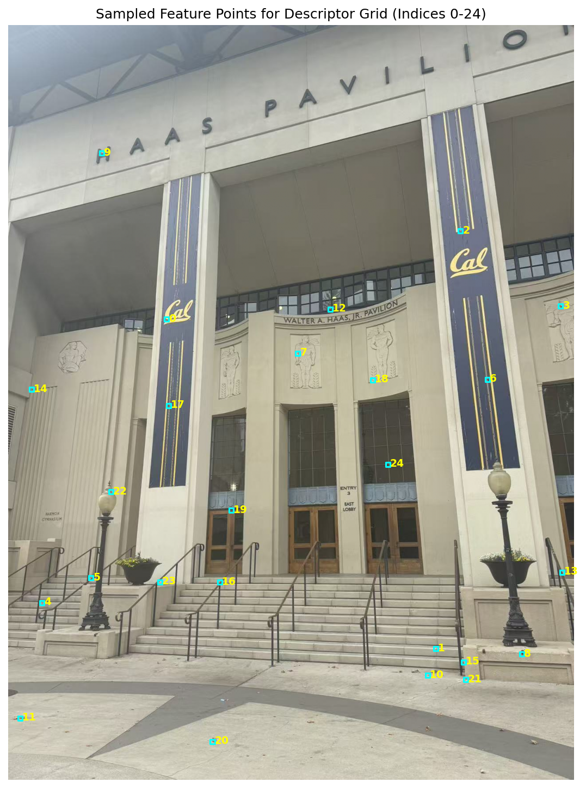
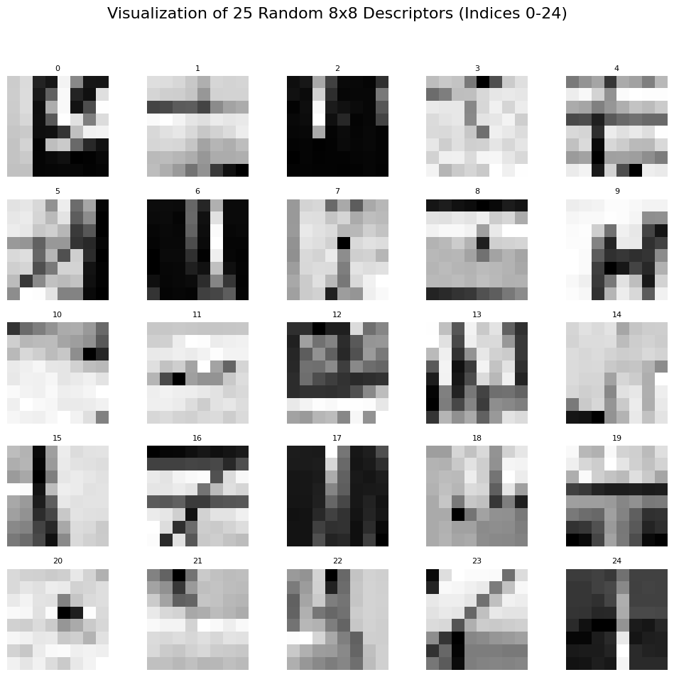
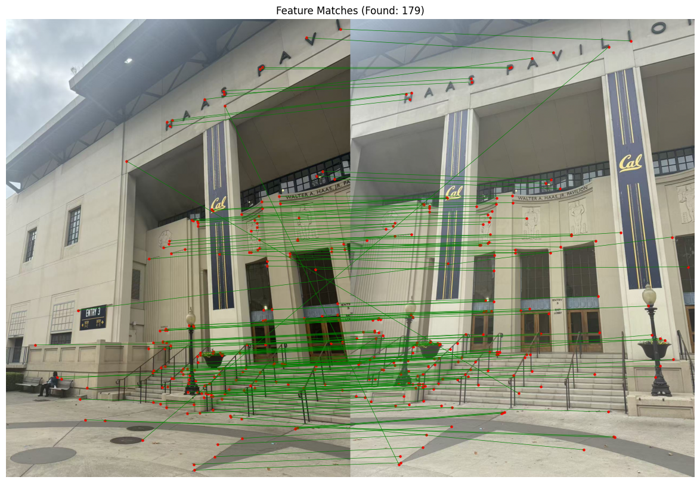
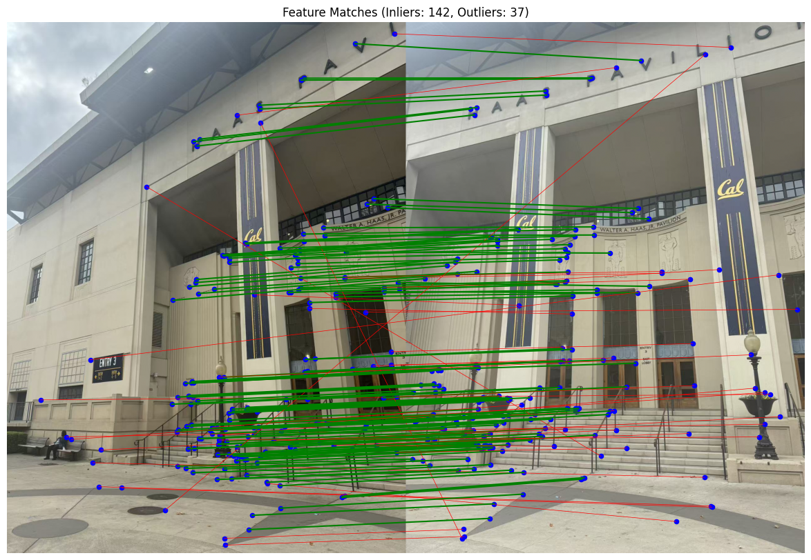

Project 3
Part A.1: Shoot the Pictures
I used my phone to take three sets of overlapping photos.


Part A.2: Recovering Homographies
Before any warping or mosaicing, I needed the homography H that maps a point p = [x, y, 1]^T in image 1 to its correspondence p' = [x', y', 1]^T in image 2 via p' ~ H p. Because H has eight degrees of freedom (the (3,3) entry can be fixed to 1), every correspondence gives me two linear equations. Stacking n correspondences yields the familiar DLT design matrix A:
[-x -y -1 0 0 0 xx' yx' x']
[ 0 0 0 -x -y -1 xy' yy' y']
[h1 h2 h3 h4 h5 h6 h7 h8 h9]^T = 0
With n ≥ 4 correspondences the system is overdetermined, so, following the DLT recipe, I solve A h = 0 in the least-squares sense by taking the right-singular vector corresponding to the smallest singular value.
The plots below are the correspondences I manually selected using the online tool made by a prior student (https://cal-cs180.github.io/fa23/hw/proj3/tool.html).


After solving for H I validated each solution. I projected the image-1 points through H and computed the reprojection error ||H p - p'||_2. The statistics are tiny, confirming the least-squares fit is stable.
| Pair | Homography H | Mean reprojection error (px) | Max error (px) |
|---|---|---|---|
| Haas courtyard | [1.56, -0.15, -610.03] |
2.07 | 5.01 |
| View outside my window | [1.44, 0.081, -633.44] |
2.00 | 4.34 |
| Kitchen | [1.71, -0.045, -950.19] |
1.43 | 3.49 |
Part A.3: Warp the Images
Then I implemented inverse warping in two flavors. Both warpImageNearestNeighbor and warpImageBilinear pre-compute the canvas bounds by pushing the source image corners through H, loop over every integer pixel on that canvas, pull back through H-1, and sample the source only when the back-projected coordinate lands inside the image bounds. The functions also return an alpha mask so later blending steps can reason about valid pixels.
Below are two examples comparing the interpolation schemes. The qualities are similar, but the bilinear versions preserve fine details slightly better (e.g., the “Entry 3” text of the Haas picture), at the cost of roughly doubling the runtime.


Here are the timings:
| Example | Nearest (ms) | Bilinear (ms) |
|---|---|---|
| Haas courtyard | 7,420 | 14,708 |
| View out of my window | 7,205 | 14,031 |
Rectification
To validate that the warps behave outside of pairwise stitching, I rectified two single images. Using the same point-selection tool, I clicked the four corners of a planar patch (top-left, top-right, bottom-left, bottom-right). For each set of points I built a rectangle whose width and height match the average of the opposing side lengths, solved computeH(pts_quad, target_rect), and warped the image with both methods.


Both tests worked well.
Here are the timings:
| Example | Nearest (ms) | Bilinear (ms) |
|---|---|---|
| Cutting-board | 9,883 | 19,112 |
| Filet-O-Fish | 8,431 | 15,263 |
Part A.4: Blend the Images into a Mosaic
For the mosaics I kept the rightmost picture fixed and inverse-warped the leftmost picture to that canvas. Every warp returns an image plus an alpha map describing where the transform landed inside bounds. I convert those sparse alphas into smooth weight fields with feather_alpha_dt (a distance transform capped at 100 px), so each pixel's contribution tapers off toward image borders. Summing image * weight across the stack and dividing by the accumulated weights produces a seamless blend without hard seams.
For image warping, I used nearest neighbor interpolation for better speed with reasonable quality.
Haas courtyard

View outside my window

Kitchen

Across all three examples the weighted average handles both sky gradients and textured surfaces well. The only noticeable artifacts are minor lighting level differences between the views, resulting from automatic exposure adjustments between shots.
Part B.1: Harris Corner Detection
To find potential points, I used the Harris corner detector, as provided in the starter code. The function returns the local maximum points of "corner strength". Here are the raw Harris corners detected on two images before any filtering:
Wow! That was scary. Those raw Harris output contained so many corners, and was not effective for robust matching later on. So I applied a threshold to the corner strength (0.01 times the maximum corner strength) to filter out some weak corners. Here are the filtered Harris corners:
However, after the thresholding, the strong corners might be clustered together. So I applied ANMS to select well-distributed corners. For each corner, ANMS computes a suppression radius. The point that has no stronger neighbors has infinite radius. For other points, the radius is the distance to the nearest corner that has a significantly higher corner strength. Finally, it selects the top N points with the largest suppression radius. Here are the corners selected by ANMS:
After those steps, I obtained a fairly evenly distributed set of strong corners.
Part B.2: Feature Descriptor Extraction
To match the corners, I still needed a way to describe each corner. For each corner, I extracted a 40x40 patch centered at the corner, blurred it to make the descriptor more robust, and downsampled it to an 8x8 patch. Finally, I normalized the descriptor to make it robust to simple brightness and contrast changes. Here are some example patches extracted from the corners:
 Part B.3: Feature Matching
Now we can match those descriptors! I measured the similarity between two descriptors using the L2 distance. I implemented a symmetric version of Lowe's ratio test to filter out ambiguous matches. For each descriptor in image 1, I found its two nearest neighbors in image 2. If the ratio of the distances to the nearest and second nearest neighbor is below a threshold, I accepted the match. I repeated the same process for each descriptor in image 2. Finally, I only kept the matches that were accepted in both directions. Here are the matches found between two images:
Part B.4: RANSAC for Robust Homography
As we can see, there are still some mismatches in the previous results due to repetitive patterns and noise. So I implemented RANSAC to find a robust homography that fits the inliers (correct matches) while ignoring the outliers (incorrect matches). I iteratively did the following: First, randomly select 4 distinct matches to compute a candidate homography. Then, I projected all the corners from image 1 to image 2 and calculated the squared Euclidean distance between the projected points and their corresponding points in image 2. Then I counted how many matches have a squared distance below a threshold, which are considered inliers. If the number of inliers is larger than the best one found so far, I updated the best homography and inlier set. After a fixed number of iterations, I re-computed the homography using all the inliers found for the best homography. Here are the inlier (green) and outlier (red) matches after RANSAC:
Finally, I used the computed homography to warp and blend the two images into a mosaic. Here are the final auto stitching results vs the manual stitching results on three image pairs: